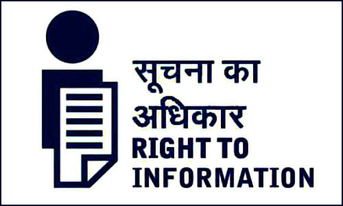

Freedom of speech and expression is basic to and indivisible from a democratic polity. A true democracy cannot exist unless all citizens have a right to participate in the affairs of the polity of the country. The right to participate in the affairs of the country is meaningless unless the citizens are well-informed on all sides of the issues surrounding the democracy. One-sided information, misinformation, disinformation & non-information all create an uninformed citizenry which makes democracy a farce. Hence right to information is a must in a democratic society as it helps to create a more informed citizenry which strengthens the very foundation of democracy: transparency, accountability & participation. “Where a society has chosen to accept democracy as its creedal faith it is elementary that citizens ought to know what their government is doing” – Justice P.N. Bhagwati Article 19 of the universal declaration of human rights 1948 provides that “everyone has the right to freedom of opinion and expression and this right includes freedom to hold opinion without interference and to seek, receive and impart information and ideas through any media, regardless of frontiers”. Thus, the international discourse intrinsically recognised the right to information (RTI) as a fundamental human right. Therefore, as the largest and the most vibrant democracy of the world, the RTI becomes all the way important for the “great Indian nation”. As Abraham Lincoln noted democracy is “of the people, for the people & by the people” and since the very idea of democracy revolves around people, it is necessary that people are duly informed about the democratic functioning of their country and make democracy what it is i.e. more transparent, accountable & participative.
